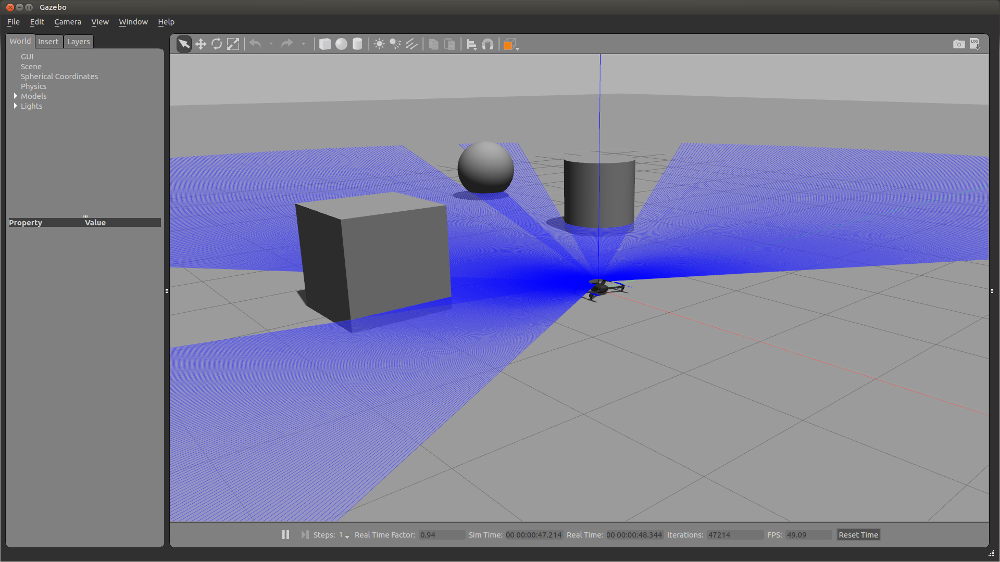

5. 新しいモデルを追加する¶
この章では、次の章で使用する、2D Lidar付きのIrisのモデルを作成します。
はじめに、Irisのモデルを格納するディレクトリを作成します。 今回は、iris_2d_lidarというフォルダに格納することにします。
cd ~/catkin_ws/src/px4_sim_pkg
mkdir -p models/iris_2d_lidar
5.1. SDFファイルを作る¶
5.1.1. SDFとは¶
Gazeboでは、SDFというフォーマットを使用してロボットのモデルを定義します。 SDFとURDFの関係については Gazebo + ROS で自分だけのロボットをつくる 4.URDFファイルをつくる を参照してください。 また、GazeboでURDFを使う場合には Tutorial: Using a URDF in Gazebo が参考になります。
5.1.2. model.sdf¶
先ほど作ったiris_2d_lidarフォルダ以下にmodel.sdfファイルを作成します。 これがロボットの物理モデルや形状を定義するファイルです。
5.1.2.1. 既存のモデルをインクルードする¶
SDFでは既存のモデルをインクルードして再利用することができます。 以下のように記述することで既存のモデルをインクルードできます。
1 2 3 | <include>
<uri>model://iris</uri>
</include>
|
今回はPX4 Firmwareにあるirisのモデルを使用します。
このようにインクルードする場合には、 GAZEBO_MODEL_PATH に使用するモデルのパスが設定されていないといけません。
このチュートリアル通りに環境構築をしている場合にはすでにモデルのパスが設定されているはずですが、必要な場合は以下のコマンドを実行してください。
export GAZEBO_MODEL_PATH=$HOME/src/Firmware/Tools/sitl_gazebo/models:$GAZEBO_MODEL_PATH
5.1.2.2. LiDARのリンクを定義する¶
リンク（ <link></link> ）はモデルの物理特性を定義するために使います。
できるだけ少ない数のリンクでモデルを構築したほうがシミュレーションのパフォーマンスや安定性が向上します。
model.sdfファイル内では、以下のようにLiDARのリンクを定義しています。
1 2 3 4 5 6 7 8 9 10 11 12 13 14 15 16 17 18 19 20 21 22 23 24 25 26 27 28 29 30 31 32 33 34 35 36 37 38 39 40 41 42 43 44 45 46 47 48 49 50 51 52 53 54 55 56 57 58 59 60 61 62 | <link name="lidar_link">
<pose>0 0 0.05 0 -0.0085 0</pose>
<inertial>
<pose>0 0 0 0 -0 0</pose>
<mass>0.01</mass>
<inertia>
<ixx>2.1733e-6</ixx>
<ixy>0</ixy>
<ixz>0</ixz>
<iyy>2.1733e-6</iyy>
<iyz>0</iyz>
<izz>1.8e-7</izz>
</inertia>
</inertial>
<visual name="lidar_visual">
<geometry>
<cylinder>
<radius>0.01</radius>
<length>0.05</length>
</cylinder>
</geometry>
<material>
<script>
<name>Gazebo/DarkGrey</name>
<uri>file://media/materials/scripts/gazebo.material</uri>
</script>
</material>
</visual>
<sensor name="laser" type="ray">
<pose>0 0 0.02 0 0 0</pose>
<ray>
<scan>
<horizontal>
<samples>720</samples>
<resolution>1</resolution>
<min_angle>-2.0944</min_angle>
<max_angle>2.0944</max_angle>
</horizontal>
</scan>
<range>
<min>0.1</min>
<max>15</max>
<resolution>0.01</resolution>
</range>
<noise>
<type>gaussian</type>
<mean>0.0</mean>
<stddev>0.01</stddev>
</noise>
</ray>
<plugin name="LaserPlugin" filename="libgazebo_ros_laser.so">
<topicName>/laser/scan</topicName>
<frameName>/lidar_link</frameName>
</plugin>
<always_on>1</always_on>
<update_rate>40</update_rate>
<visualize>true</visualize>
</sensor>
</link>
|
それぞれの要素について見ていきましょう。
- inertial
- 質量や慣性モーメントなどの動力学的特性を指定します。
- visual
- 形状やテクスチャなどの外見を指定します。
geometryで形状、materialでテクスチャを指定します。形状には円柱や直方体の他に、3D CADなどで作成したメッシュを指定できます。 - sensor
- センサの仕様や使うプラグインを指定します。使えるセンサにはLiDARやカメラ、IMU等があります。
- collision
- 接触判定に使われるリンクの形状を指定します。
visualタグと同様にシンプルな形状の他にメッシュを指定することもできます。複雑なコリジョンの指定はパフォーマンスに影響を与えるので、円柱や直方体など、できるだけシンプルな形にしましょう。シミュレーション内のセンサの値が狂う場合もあります。今回のモデルでは使われていません。 - plugin
- センサの動作をシミュレートするためのものです。今回はレーザのプラグインを使っています。詳細は Tutorial: Using Gazebo plugins with ROS を見てください。
5.1.2.3. LiDARとbase_linkのジョイントを定義する¶
ジョイントは2つのリンクを接続するための要素です。 今回はirisのbase_linkリンクとLiDARのlidar_linkリンクを接続します。
<child> タグで子リンクを指定し、 <parent> タグで親リンクを指定しています。
irisのbase_linkのような、インクルードしたモデルのリンクを指定する際には、 iris::base_link のように、どのモデルのリンクであるかを指定してやる必要があります。
1 2 3 4 | <joint name="lidar_joint" type="fixed">
<child>lidar_link</child>
<parent>iris::base_link</parent>
</joint>
|
今回は固定関節を使っていますが、他にも回転関節や直動関節などが使えます。
5.1.2.4. model.sdf¶
最終的なmodel.sdfファイルは以下のようになります。
1 2 3 4 5 6 7 8 9 10 11 12 13 14 15 16 17 18 19 20 21 22 23 24 25 26 27 28 29 30 31 32 33 34 35 36 37 38 39 40 41 42 43 44 45 46 47 48 49 50 51 52 53 54 55 56 57 58 59 60 61 62 63 64 65 66 67 68 69 70 71 72 73 74 75 76 77 78 | <?xml version='1.0'?>
<sdf version='1.6'>
<model name='iris_2d_lidar'>
<include>
<uri>model://iris</uri>
</include>
<link name="lidar_link">
<pose>0 0 0.05 0 -0.0085 0</pose>
<inertial>
<pose>0 0 0 0 -0 0</pose>
<mass>0.01</mass>
<inertia>
<ixx>2.1733e-6</ixx>
<ixy>0</ixy>
<ixz>0</ixz>
<iyy>2.1733e-6</iyy>
<iyz>0</iyz>
<izz>1.8e-7</izz>
</inertia>
</inertial>
<visual name="lidar_visual">
<geometry>
<cylinder>
<radius>0.01</radius>
<length>0.05</length>
</cylinder>
</geometry>
<material>
<script>
<name>Gazebo/DarkGrey</name>
<uri>file://media/materials/scripts/gazebo.material</uri>
</script>
</material>
</visual>
<sensor name="laser" type="ray">
<pose>0 0 0.02 0 0 0</pose>
<ray>
<scan>
<horizontal>
<samples>720</samples>
<resolution>1</resolution>
<min_angle>-2.0944</min_angle>
<max_angle>2.0944</max_angle>
</horizontal>
</scan>
<range>
<min>0.1</min>
<max>15</max>
<resolution>0.01</resolution>
</range>
<noise>
<type>gaussian</type>
<mean>0.0</mean>
<stddev>0.01</stddev>
</noise>
</ray>
<plugin name="LaserPlugin" filename="libgazebo_ros_laser.so">
<topicName>/laser/scan</topicName>
<frameName>/lidar_link</frameName>
</plugin>
<always_on>1</always_on>
<update_rate>40</update_rate>
<visualize>true</visualize>
</sensor>
</link>
<joint name="lidar_joint" type="fixed">
<child>lidar_link</child>
<parent>iris::base_link</parent>
</joint>
</model>
</sdf>
|
lidarのリンクの姿勢は、
<pose>0 0 0.05 0 -0.0085 0</pose>
のように、少し後ろに傾けて定義してあります。 これは、ドローン自身に光線が干渉するのを防ぐためです。
SDFのタグ一覧は ここ から見ることができます。
LiDARのモデルも別のファイルで記述してインクルードするという形にすると、モデルの記述がすっきりしていいかもしれません。
その場合は、 <link name="lidar_link>..</link> で囲まれている部分を別のモデルに分離して、インクルードするという形になります。
ジョイントはリンク同士の接続を定義しているので、そのままにします。
例えばこんな感じです。
1 2 3 4 5 6 7 8 9 10 11 12 13 14 15 16 17 18 19 20 21 22 23 24 25 26 27 | <?xml version='1.0'?>
<sdf version='1.6'>
<model name='iris_2d_lidar'>
<include>
<uri>model://iris</uri>
</include>
<include>
<uri>model://lidar_2d</uri>
<pose>0 0 0.07 0 0 0</pose>
</include>
<joint name="lidar_joint" type="fixed">
<child>lidar_2d::lidar_link</child>
<parent>iris::base_link</parent>
<axis>
<xyz>0 0 1</xyz>
<limit>
<upper>0</upper>
<lower>0</lower>
</limit>
</axis>
</joint>
</model>
</sdf>
|
この例ではLiDARはlidar_2dというモデルに分離しています。
別のファイルにモデルを分割する場合は、 GAZEBO_MODEL_PATH にモデルがあるパスを追加することを忘れないでください。
例えば、 px4_sim_pkg/models 以下にlidar_2dモデルを置いた場合には、以下のコマンドを実行して設定を行います。
export GAZEBO_MODEL_PATH=$HOME/catkin_ws/src/px4_sim_pkg/models:$GAZEBO_MODEL_PATH
ターミナルからコマンドを実行して設定を行った場合は毎回設定する必要がありますが、.bashrcにこの内容を記述しておけば、ターミナルを起動した時に自動で設定されます。
5.2. configファイルを作る¶
モデルには、名前や作成者などのモデルの情報を記したmodel.configファイルが必要です。 基本的には以下のような形になります。 タグの詳細については Model structure and requirements で確認してください。
1 2 3 4 5 6 7 8 9 10 11 12 13 14 15 | <?xml version="1.0"?>
<model>
<name>iris_2d_lidar</name>
<version>1.0</version>
<sdf>model.sdf</sdf>
<author>
<name>Takaki Ueno</name>
<email>t_ueno@eis.hokudai.ac.jp</email>
</author>
<description>
Iris with 2d horizontal lidar.
</description>
</model>
|
5.3. パスを設定する¶
GazeboのGUIからモデルを追加したり、SDFファイルからインクルードするためには、作成したモデルのパスが通っていないといけません。
モデルのパスは ~/catkin_ws/src/px4_sim_pkg/models なので、次のコマンドを実行してモデルのパスを設定します。
export GAZEBO_MODEL_PATH=$HOME/catkin_ws/src/px4_sim_pkg/models:$GAZEBO_MODEL_PATH
もしくは、上のコマンドをそのまま ~/.bashrc に書いても構いません。
5.4. モデルを確認する¶
GazeboのGUIからモデルを読み込んで確認してみましょう。
gazebo

赤枠内のInsertタブからiris_2d_lidarを選択してモデルを追加しましょう。
LiDAR付きのIrisのモデルがきちんと作成されたことが確認できました。
5.5. SITLシミュレーションでモデルを使う¶
次のコマンドを実行すると今回作成したモデルをSITLシミュレーションで使うことができます。 コマンドラインからlaunchファイルに引数を与える方法については、 ROS Wiki を見てください。
roslaunch px4 posix_sitl.launch sdf:=$HOME/catkin_ws/src/px4_sim_pkg/models/iris_2d_lidar/model.sdf
mavros_posix_sitl.launchを使う場合には以下のようにします。
roslaunch px4 mavros_posix_sitl.launch sdf:=$HOME/catkin_ws/src/px4_sim_pkg/models/iris_2d_lidar/model.sdf
もしくは、このようなlaunchファイルを書いてもいいでしょう。
1 2 3 4 5 6 7 8 9 | <launch>
<arg name="sdf" default="$(find dronedoc)/models/iris_2d_lidar/model.sdf" />
<include file="$(find px4)/launch/mavros_posix_sitl.launch" >
<arg name="sdf" value="$(arg sdf)" />
</include>
</launch>
|
5.6. 参考¶
- Make a Model
- Gazeboモデルの作成について
- Make a Mobile Robot
- モバイルロボットの作成について
- Model structure and requirements
- モデルのファイル構成について
- Gazebo Components
- GAZEBO_MODEL_PATHについて